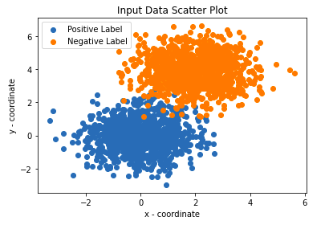
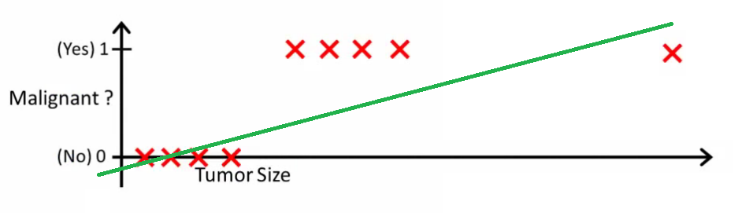
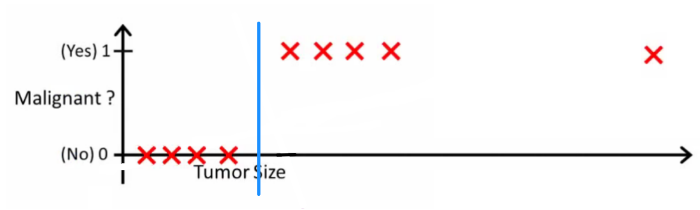

These notes accompany the NISER CS class CS460/660: Machine Learning. For questions/concerns/bug reports, please submit a pull request directly to this git repo.
Introduction
Logistic Regression (LReg) is a supervised algorithm used in classification problems in machine learning. There are two output labels/classes that the data would be classified into, we will call them positive and negative labels (we will denote the positive labels with the value 1 and the negative labels with 0). One can make a multi-label classification using LReg, but we will touch upon that towards the end.
One has to ask why is the term "Regression" used in the name when it is a classification algorithm. Regression is an algorithm that gives us a real number as the output for every input x, and the output of a regression model, \{y\} is continuous. LReg also gives a continuous real number as the output, but we have some sort of a threshold to put it into one of the 2 labels. The reason "Logistic" is used is that this algorithm involves using the standard logistic function or the sigmoid function: .
Model Representation and Training
We will use the same function as used in linear regression, given by (WX + b) where X is our input and W and b are our parameters, which are learnt during training. Only this time, we will transform the output using the logistic function to return a value between 0 and 1. Let us call this parameterised logistic function, S_{W, b}(X)). We have:
S_{W, b}(X) = \frac{1}{1 + e^{-(WX + b)}}
For an input X, S_{W, b}(X) lies in (0, 1). This is taken as the probability that the input belongs to class 1. The probability that X belongs to class 0, is (1 - S_{W, b}(X)).
Now, to assign a class, we set some threshold (say t) such that, for some X_i, if S_{W, b}(X_i) \geq t then the label 1 is assigned to X_i, else 0 is assigned. The figure shown below explains the same, graphically, where is the sigmoid takes a functional value above the blue line, then 1 is assigned; if it takes a functional value under the blue line, 0 is assigned.
Fig.1 - Threshold for classifying into positive/negative label (Source: Machine Learning Glossary)
We also define likelihood:
\begin{aligned}
L_{(W, b)} \equiv L((W, b) \mid y ; X) &=\prod_{i = 1}^N S_{W, b}\left(X_{i}\right)^{y_{i}}\left(1 - S_{W, b}\left(X_{i}\right)\right)^{\left(1-y_{i}\right)}
\end{aligned}
Above, y (\equiv \{y_i\}) and X (\equiv \{X_i\}) are the true output and corresponding input (training) data respectively. y_{i} is the true class, i.e 0 or 1. The product is from i = 0 to N where here N is taken to be the training dataset size. The above function we have, quantifies how good our fit is, or in simpler terms, how likely a given input will give the correct label. We see that the above definition is the likelihood of observing N labels for N examples, which is the product of likelihood of each observation.
Like in linear regression, where we minimised the loss function and thus update our parameters, LReg will involve maximising the likelihood function.
As an example let us say y_i = 1 and we have x_1 that is some real number. S_{W, b}\left(x_{i}\right)^{y_{i}}\left(1 - S_{W, b}\left(x_{i}\right)\right)^{\left(1-y_{i}\right) would give us S_{W, b}\left(x_{i}\right)^{1}\left(1 - S_{W, b}\left(x_{i}\right)\right)^{0} = S_{W, b}\left(x_{i}\right) \in (0,1).
One needs to note that there should not be interdependent examples/observations, which means that any example one chooses, it should be independent of the other examples in the dataset.
Since we have exponentials involved (harder to calculate), one can also shift to log-likelihood, and thus the equation now becomes:
Not always will we get a closed form solution and in those situations, we will have to find our optimal parameters using gradient descent.
The parameter update thus involves the likelihood as the loss function. But one should be vary of the sign, as the parameter update involves the negative of the gradient of the loss function, where we want to reach the minima. But in logistic regression we would want to maximise the likelihood, hence there would be some difference in the signs involved.
The cost function for gradient descent would be:
We will first code a simple logistic regression model for a sample dataset only using NumPy in Python. This is to understand how things work on a deeper basis. Another Python code for the same using Python's libraries will be added. This is for the reader to also get used to using the existing libraries.
# Let us first create our input Data. We look to having 2 features (x and y co-ordinate) and 2 labels: 0 and 1
np.random.seed(10)
num_observations =1000# Create a 2-dimensional Gaussian Distribution. We make 2 distributions, one for each label.
mean1 = (0, 0) # Mean of first distribution
mean2 = (2, 4) # Mean of second distribution
cov = [[1, 0], [0, 1]] # Co-variance of both distributions
data1=[]
x1, y1 = np.random.multivariate_normal(mean1, cov, num_observations).T
x2, y2 = np.random.multivariate_normal(mean2, cov, num_observations).T
for i inrange(len(x1)):
t1 = x1[i]
t2 = y1[i]
data1.append([t1,t2,1])
for i inrange(len(x1)):
t1 = x2[i]
t2 = y2[i]
data1.append([t1,t2,0])
# Convert to DataFrame
data = pd.DataFrame(data1)
data.columns=['x', 'y', 'label']
column = data["x"]
# Plot the input data
fig = plt.figure()
ax1 = fig.add_subplot(111)
plt.xlabel('x - coordinate')
plt.ylabel('y - coordinate')
ax1.scatter(data[0:num_observations]['x'], data[0:num_observations]['y'], label='Positive Label')
ax1.scatter(data[num_observations:2*num_observations]['x'], data[num_observations:2*num_observations]['y'], label='Negative Label')
plt.legend(loc='best')
plt.title('Input Data Scatter Plot')
plt.show()
We thus get the following output:

# Save the input training data as feature values and corresponding label
inp_df = data.drop(data.columns[[2]], axis=1)
out_df = data.drop(data.columns[[0,1]], axis=1)
# Standardize features by removing the mean and scaling to unit variance
scaler = StandardScaler()
inp_df = scaler.fit_transform(inp_df)
# Split training data into training data and testing data
X_train, X_test, y_train, y_test = train_test_split(inp_df, out_df, test_size=0.2, random_state=20)
y_tr_arr = y_train.to_numpy()
y_ts_arr = y_test.to_numpy()
print('Input Shape', (X_train.shape))
print('Output Shape', X_test.shape)
Please note that for the next two code blocks, this source has been referred, but with slight improvements.
deflogistic(x):
final_result =1/(1+np.exp(-x))
return final_result
defmodel_optimize(w, b, X, Y):
m = X.shape[0]
# Prediction
final_result = logistic(np.dot(w,X.T)+b)
Y_T = Y.T
# Log-likelihood, but with a negative sign, because with gradient descent, we look to minimising the loss function, which in our case is the log-likelihood
cost = (-1/m)*(np.sum((Y_T*np.log(final_result)) + ((1-Y_T)*(np.log(1-final_result)))))
# Gradient calculation
dw = (1/m)*(np.dot(X.T, (final_result-Y.T).T))
db = (1/m)*(np.sum(final_result-Y.T))
grads = {"dw": dw, "db": db}
return grads, cost
defmodel_predict(w, b, X, Y, learning_rate, no_iterations):
costs = []
for i inrange(no_iterations):
grads, cost = model_optimize(w,b,X,Y)
dw = grads["dw"]
db = grads["db"]
# Update the Weights
w = w - (learning_rate * (dw.T))
b = b - (learning_rate * db)
if (i %100==0):
costs.append(cost)
# Final parameters
coeff = {"w": w, "b": b}
gradient = {"dw": dw, "db": db}
return coeff, gradient, costs
defpredict(final_pred, m, threshold):
# A threshold is added, so the user can play with this number to see how the accuracy changes.
y_pred = np.zeros((1,m))
for i inrange(final_pred.shape[1]):
if final_pred[0][i] > threshold:
y_pred[0][i] =1return y_pred
# Get number of features, which in our case is 2
n_features = X_train.shape[1]
print('Number of Features', n_features)
# Initialise parameters. Since our example is a very simple one, we will take up initialisation to zero.
w = np.zeros((1,n_features))
b =0# Set Threshold
t =0.5# Perform Gradient Descent
coeff, gradient, costs = model_predict(w, b, X_train, y_tr_arr, learning_rate=0.0001,no_iterations=4500)
w = coeff["w"]
b = coeff["b"]
print('Optimized weights', w)
print('Optimized intercept',b)
final_train_pred = logistic(np.dot(w,X_train.T)+b)
final_test_pred = logistic(np.dot(w,X_ts_arr.T)+b)
m_tr = X_train.shape[0]
m_ts = X_test.shape[0]
# Get Training Accuracy
y_tr_pred = predict(final_train_pred, m_tr, t)
print('Training Accuracy',accuracy_score(y_tr_pred.T, y_tr_arr))
# Get Testing Accuracy
y_ts_pred = predict(final_test_pred, m_ts, t)
print('Test Accuracy',accuracy_score(y_ts_pred.T, y_ts_arr))
This gives us the following output:
Number of Features 2
Optimized weights [[-0.14523948-0.18649513]]
Optimized intercept -0.0031321592899463723
Training Accuracy 0.981875
Test Accuracy 0.9825
The code for the same using scikit-learn in Python is available here. scikit-learn is a simple machine learning library in Python and building machine learning models are comparatively very easy using scikit-learn rather than coding for the algorithms yourself. However, for a deeper understanding it is a good exercise to code such simple models from scratch. Once that foundation is built, one can switch to libraries like scikit-learn for a faster and more efficient experience.
Logistic Regression vs. Linear Regression
Logistic regression tells you the probability that your input belongs to the "positive" class. So when we set a threshold on the probability, we obtain a classifier. Linear regressors try to interpolate/extrapolate the output and predict the value for x. It is more suitable for problems like prediction. One reason as to why one should not use a linear regressor for a classification problem is that, when there is an outlier belonging to one of the classes, that outlier plays a heavy role in deciding the parameter values, and this can lead to a bad model.
The following figure explains this issue, rather nicely:

Fig. 3: For a threshold of say, 0.5, we see why linear regression can give us bad results if we have such outliers. (Source: StackExchange)
But in the case of logistic regression, we'd have the following output:

Fig. 3: For logistic regression, we'd have a decision boundary like the one above. (The above figure is just a representation, and not to be taken as an accurate decision boundary; Source: StackExchange)
For a multi-class classification problem, (which can be done using LReg) using the linear regression would be difficult when one is defining the distance metric. We might get different results just by shuffling the labels of the classes or changing the scale of assigned numeric values. When the value of a feature with a positive weight is higher compared to the others, it contributes more to the parameter updates, because it has a higher weight. Considering if one has read the next section on Multi-class classification using LReg, one can see that the sigmoid function squeezing all labels between 0 and 1 plays an important role here so that all labels have the same weight, irrespective of what value they were given initially. This acts somewhat like a normalising mechanism. Hence we see that linear regression would be a bad algorithm to use in this case.
As explained in [4], Logistic regression can suffer from complete separation. If there is a feature that would perfectly separate the two classes, the logistic regression model can no longer be trained. This is because the weight for that feature would not converge because the optimal weight would be infinite. This is really a bit unfortunate because such a feature is really useful. The problem of complete separation can be solved by introducing penalization of the weights or defining a prior probability distribution of weights.
LReg is not only a classification model, but it also gives one, an idea of how probable that example belongs to that label. It is somewhat like an additional piece of information. Knowing that an example has a 99% probability for it to belong to a class compared to 60% makes a big difference.
LReg doesn't require high computation power and it is easy to implement. LReg will not be able to handle a large number of categorical features/variables and it will also not perform well with independent variables that are not correlated to the target variable and are very similar/correlated to each other.
Multinomial Logistic Regression
A multinomial logistic regression problem is one where you perform logistic regression for a problem where you have multiple classes/labels (unlike just 2 in LReg).
Let us say our labels are 1, 2, 3 ... n. How we go about solving this problem is that we divide the problem into n binary classification problems.
The ith binary problem will have 2 classes: i and NOT i. We then predict the probability of all n such binary classification problems.
Let us say p(i) is the probability of the ith binary classification problem.
Then our Prediction = argmax(p(i)).